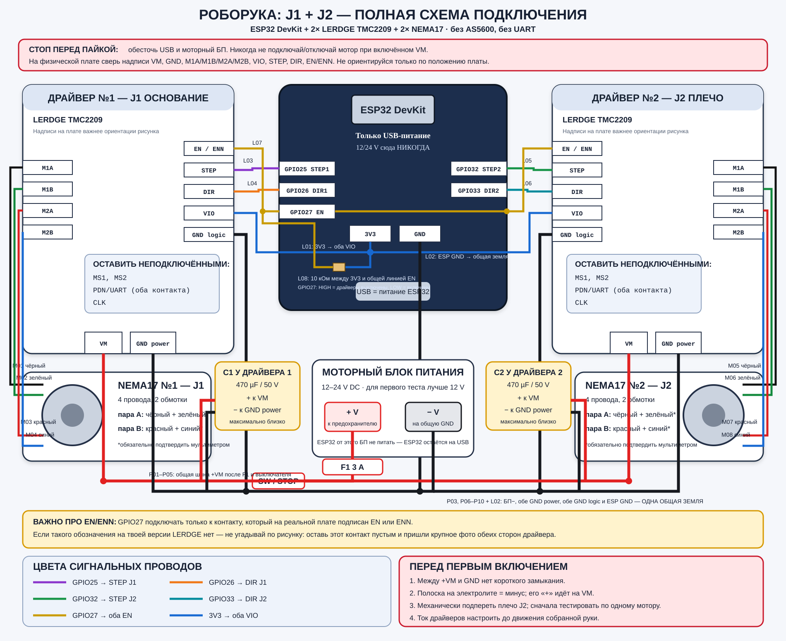

Подключение двух NEMA17 к ESP32 через два LERDGE TMC2209
Финальная схема для J1 (основание) и J2 (плечо). Сейчас без магнитных датчиков AS5600 и без UART.
Перед любой пайкой полностью отключи USB и моторный блок питания
Нельзя вставлять или вынимать разъём мотора, пока на VM драйвера есть питание: так часто сгорает TMC2209.
Нельзя подавать 12/24 В на ESP32, его VIN/5V или 3V3. На первом этапе ESP32 получает питание только по USB.
Главная схема — можно открыть отдельно и увеличить

Нажми на схему, чтобы открыть SVG отдельно. Он векторный и не теряет чёткость при увеличении.
Один критичный нюанс именно с твоей версией LERDGE
В ранних материалах проекта верхний левый контакт драйвера был помечен как «EN нет», а в поздней общей схеме он использован как EN. Поэтому GPIO27 припаивай только к контакту, который на самой плате реально подписан EN или ENN. Если такой подписи нет — контакт пока оставь пустым и пришли крупное фото обеих сторон драйвера. Подключать неизвестный контакт наугад нельзя.
Два мотора между собой не соединяются
У каждого NEMA свой отдельный TMC2209. Выходы M1A/M1B/M2A/M2B двух драйверов никогда не объединяются. Общими являются только питание +VM, земля GND, логические 3V3 и, если подтверждён контакт, линия EN/ENN.
Физический порядок контактов LERDGE TMC2209
Это порядок, зафиксированный в предыдущей схеме проекта. Держи плату так же, как на старом рисунке, и всё равно сверяй каждую надпись на шелкографии.
| № сверху | Левая гребёнка | Что делать сейчас | Правая гребёнка | Что делать сейчас |
|---|---|---|---|---|
| 1 | EN/ENN — только если так подписан | к GPIO27 обоих драйверов | VM | к +12…24 V после F1/выключателя |
| 2 | MS1 | оставить пустым | GND power | к общей GND |
| 3 | MS2 | оставить пустым | M1B | провод №2 первой обмотки |
| 4 | PDN/UART | оставить пустым | M1A | провод №1 первой обмотки |
| 5 | PDN/UART | оставить пустым | M2A | провод №1 второй обмотки |
| 6 | CLK | оставить пустым | M2B | провод №2 второй обмотки |
| 7 | STEP | GPIO25 для J1 / GPIO32 для J2 | VIO | к ESP32 3V3 |
| 8 | DIR | GPIO26 для J1 / GPIO33 для J2 | GND logic | к общей GND |
Если расположение или подписи на реальном модуле отличаются хотя бы в одном месте, не продолжай по этой таблице: нужна фотография именно твоей ревизии платы.
Карта контактов ESP32
| Контакт ESP32 | Куда идёт | Назначение | Рекомендуемый цвет |
|---|---|---|---|
GPIO25 | STEP драйвера №1 | Шаги J1 — основание | фиолетовый |
GPIO26 | DIR драйвера №1 | Направление J1 | оранжевый |
GPIO32 | STEP драйвера №2 | Шаги J2 — плечо | зелёный |
GPIO33 | DIR драйвера №2 | Направление J2 | бирюзовый |
GPIO27 | оба EN/ENN, параллельно | LOW — драйверы включены; HIGH — выключены | жёлтый |
3V3 | оба VIO, параллельно | Питание логики драйверов 3,3 В | синий |
GND | общая шина земли | Общая точка для ESP32, БП и обоих драйверов | чёрный |
Не подключаем сейчас: MS1, MS2, оба PDN/UART, CLK. Контакты датчиков тоже пока отсутствуют.
Все места соединения и пайки — по номерам
Моторное питание
| № | Откуда | Куда | Провод / замечание |
|---|---|---|---|
| P01 | БП +12…24 V | вход держателя предохранителя F1 | красный, 0,5–0,75 мм² |
| P02 | выход F1 | выключатель или аварийная кнопка моторного питания | предохранитель 3 А для имеющегося БП 3 А |
| P03 | БП − | общая шина GND | чёрный, 0,5–0,75 мм² |
| P04 | шина +VM после F1/выключателя | VM драйвера №1 | отдельная ветка, красный |
| P05 | шина +VM после F1/выключателя | VM драйвера №2 | отдельная ветка, красный |
| P06 | общая GND | GND power драйвера №1 | отдельная ветка, чёрный |
| P07 | общая GND | GND power драйвера №2 | отдельная ветка, чёрный |
| P08 | C1 плюс | VM драйвера №1 | 470 мкФ / 50 В, максимально близко к драйверу |
| P09 | C1 минус, сторона с полосой | GND power драйвера №1 | не перепутать полярность |
| P10 | C2 плюс / минус | VM / GND power драйвера №2 | второй отдельный 470 мкФ / 50 В |
Логика ESP32 → драйверы
| № | Соединение | Как сделать |
|---|---|---|
| L01 | ESP32 3V3 → VIO драйвера №1 и VIO драйвера №2 | одна точка разветвления на два провода |
| L02 | ESP32 GND → общая GND; обе GND logic → туда же | это обязательная общая земля; без неё STEP/DIR не имеют общего уровня |
| L03 | GPIO25 → STEP №1 | прямой сигнальный провод |
| L04 | GPIO26 → DIR №1 | прямой сигнальный провод |
| L05 | GPIO32 → STEP №2 | прямой сигнальный провод |
| L06 | GPIO33 → DIR №2 | прямой сигнальный провод |
| L07 | GPIO27 → оба подтверждённых EN/ENN | одна точка разветвления; только если контакт реально подписан EN/ENN |
| L08 | резистор 10 кОм между линией EN и 3V3 | подтяжка держит драйверы выключенными, пока ESP32 запускается |
Моторы
| № | Драйвер | Контакт | Провод мотора по текущей модели* |
|---|---|---|---|
| M01 | №1 J1 | M1A | чёрный |
| M02 | №1 J1 | M1B | зелёный |
| M03 | №1 J1 | M2A | красный |
| M04 | №1 J1 | M2B | синий |
| M05 | №2 J2 | M1A | чёрный |
| M06 | №2 J2 | M1B | зелёный |
| M07 | №2 J2 | M2A | красный |
| M08 | №2 J2 | M2B | синий |
* Цвета взяты из предыдущих материалов этого проекта, но у разных партий NEMA они могут отличаться. Сначала обязательно найди реальные пары мультиметром.
Как правильно определить четыре провода каждого NEMA
- Полностью отсоедини мотор от драйвера.
- Поставь мультиметр в режим сопротивления или прозвонки.
- Перебирай пары проводов. Два провода одной обмотки покажут небольшое сопротивление; между проводами разных обмоток будет обрыв.
- Первую найденную пару подключи к
M1A + M1B, вторую — кM2A + M2B. - Порядок двух проводов внутри одной пары влияет только на направление. Но нельзя поставить на одну обмотку по одному проводу из двух разных пар.
Для имеющихся моторов ожидается: чёрный + зелёный — одна пара, красный + синий — вторая. Подтверди это отдельно на J1 и J2.
Что лучше паять, а где оставить разъём
- Сигнальные провода ESP32 ↔ драйверы можно паять, каждую пайку закрыть термоусадкой.
- Питание лучше разветвить клеммниками/WAGO или распределительной колодкой.
- На моторном кабеле полезен подписанный разъём, но его разрешено размыкать только при выключенном БП.
- Многожильный провод под винтовую клемму обжимай НШВИ. Залуженный припоем конец под винтом со временем ослабевает.
- Каждый кабель подпиши с обеих сторон:
J1 STEP,J1 DIR,J2 STEP,J2 DIR,EN,3V3,GND.
Провода и детали
- силовые и моторные: 0,5–0,75 мм²;
- сигнальные: 0,14–0,25 мм²;
- 2× электролит 470 мкФ / 50 В;
- 1× резистор 10 кОм для EN;
- держатель предохранителя + предохранитель 3 А;
- две распределительные точки: +VM и GND;
- термоусадка, НШВИ/разъёмы, стяжки и разгрузка кабеля от натяжения.
Пины для будущей прошивки
constexpr int J1_STEP_PIN = 25; constexpr int J1_DIR_PIN = 26; constexpr int J2_STEP_PIN = 32; constexpr int J2_DIR_PIN = 33; constexpr int DRIVERS_EN_PIN = 27; // LOW = включить, HIGH = выключить
В самом начале setup() прошивка должна настроить GPIO27 как выход и сразу выставить HIGH. Включать драйверы через LOW только перед контролируемым тестом.
Порядок первого включения
- USB и моторный БП отключены. Механически подопри плечо J2, чтобы оно не упало при случайном движении.
- Прозвони обе пары каждого мотора и подпиши их.
- Проверь полярность обоих электролитов: полоса на корпусе означает минус.
- Мультиметром проверь, что между
+VMиGNDнет короткого замыкания, а+VMне соединён с3V3. - Сначала подключи только USB. Проверь, что ESP32 запускается, а линия EN не включает моторы самопроизвольно.
- Настрой ограничение тока обоих драйверов. Точное значение Vref нельзя безопасно назначить без маркировки резисторов Rsense на конкретной ревизии LERDGE.
- Подай моторное питание через F1. Первый тест делай на низкой скорости и только одним мотором за раз.
- Если направление неверное — позже инвертируем
DIRв программе. Не передёргивай моторные провода под напряжением.